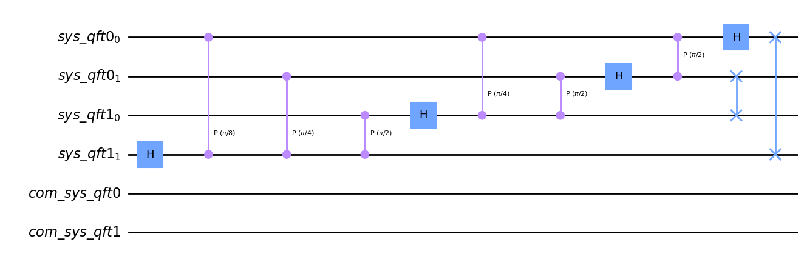
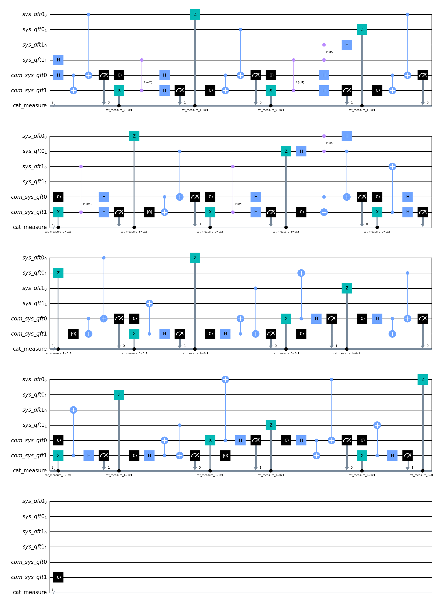
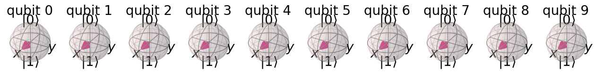

[1]:
from diskit import *
from qiskit import assemble, Aer, QuantumCircuit
from qiskit.visualization import plot_bloch_multivector
import numpy as np
import warnings
warnings.filterwarnings("ignore")
Distributed Quantum Fourier Transform¶
Functions to construct the circuit to do Quantum Fourier Transform
[2]:
def qft_rotations(circuit, n):
"""Add controlled phase gates as per qft on the first n qubits in circuit"""
if n == 0:
return circuit
n -= 1
circuit.h(n)
for qubit in range(n):
circuit.cp(np.pi/2**(n-qubit), qubit, n)
qft_rotations(circuit, n) # recursion call
def swap_registers(circuit, n):
"""Swap Registers as per QFT scheme"""
for qubit in range(n//2):
circuit.swap(qubit, n-qubit-1)
return circuit
def qft(circuit, n, transpile_swap = False):
"""QFT on the first n qubits in circuit"""
qft_rotations(circuit, n)
swap_registers(circuit, n)
return circuit
Create a Distributed Circuit for performing Quantum Fourier Transform¶
For 2 processor with 4 qubits¶
Define a Topology of 4 qubits with 2 processors each having 2 qubits
[3]:
circuit_topo = Topology()
circuit_topo.create_qmap(2, [2, 2],"sys_qft")
circuit_topo.qmap, circuit_topo.emap
[3]:
({'sys_qft0': [Qubit(QuantumRegister(2, 'sys_qft0'), 0),
Qubit(QuantumRegister(2, 'sys_qft0'), 1)],
'sys_qft1': [Qubit(QuantumRegister(2, 'sys_qft1'), 0),
Qubit(QuantumRegister(2, 'sys_qft1'), 1)]},
{'sys_qft0': Qubit(QuantumRegister(1, 'com_sys_qft0'), 0),
'sys_qft1': Qubit(QuantumRegister(1, 'com_sys_qft1'), 0)})
[4]:
remapper = CircuitRemapper(circuit_topo)
Get the registers and total number of qubits
[5]:
qregs = circuit_topo.get_regs()
n_q = circuit_topo.num_qubits()
Define the monolithic Circuit for performing Fourier Transform of \(|0\rangle\)
[6]:
circ_1 = QuantumCircuit(*qregs)
qft_circ = qft(circ_1, n_q)
qft_circ.draw(output='mpl')
[6]:

We shall need to decompose the swap gates to CNOT before translating to Distributed Circuit.
[7]:
qft_circ.decompose('swap').draw(output='mpl')
[7]:

[8]:
dist_circ_1 = remapper.remap_circuit(qft_circ.decompose('swap'))
dist_circ_1.draw('mpl')
[8]:

For 4 processors with total 16 qubits¶
Define a Topology of 10 qubits with 4 processors.
[19]:
circuit_topo = Topology()
circuit_topo.create_qmap(4, [2, 3, 4, 1],"sys_qft")
circuit_topo.qmap, circuit_topo.emap
[19]:
({'sys_qft0': [Qubit(QuantumRegister(2, 'sys_qft0'), 0),
Qubit(QuantumRegister(2, 'sys_qft0'), 1)],
'sys_qft1': [Qubit(QuantumRegister(3, 'sys_qft1'), 0),
Qubit(QuantumRegister(3, 'sys_qft1'), 1),
Qubit(QuantumRegister(3, 'sys_qft1'), 2)],
'sys_qft2': [Qubit(QuantumRegister(4, 'sys_qft2'), 0),
Qubit(QuantumRegister(4, 'sys_qft2'), 1),
Qubit(QuantumRegister(4, 'sys_qft2'), 2),
Qubit(QuantumRegister(4, 'sys_qft2'), 3)],
'sys_qft3': [Qubit(QuantumRegister(1, 'sys_qft3'), 0)]},
{'sys_qft0': Qubit(QuantumRegister(1, 'com_sys_qft0'), 0),
'sys_qft1': Qubit(QuantumRegister(1, 'com_sys_qft1'), 0),
'sys_qft2': Qubit(QuantumRegister(1, 'com_sys_qft2'), 0),
'sys_qft3': Qubit(QuantumRegister(1, 'com_sys_qft3'), 0)})
[20]:
remapper = CircuitRemapper(circuit_topo)
Get the registers and total number of qubits
[21]:
qregs = circuit_topo.get_regs()
n_q = circuit_topo.num_qubits()
Define the monolithic Circuit for performing Fourier Transform of \(|0\rangle\)
[22]:
circ_2 = QuantumCircuit(*qregs)
qft_circ = qft(circ_2, n_q)
# qft_circ.draw(output='mpl')
[23]:
dist_circ_2 = remapper.remap_circuit(circ_2.decompose('swap'))
Let us check the validity of the working of the distributed version for the 16 Qubit case
First we check the output for monolithic circuit
[24]:
from qiskit.quantum_info import partial_trace
sim = Aer.get_backend('aer_simulator')
[28]:
circ2_copy = circ_2.copy()
circ2_copy.save_statevector()
qobj = assemble(circ2_copy)
state = sim.run(qobj).result().get_statevector()
state = partial_trace(state, [10,11,12,13]) ## Trace out the communication qubits (12 - 15)
plot_bloch_multivector(state)
[28]:

Now We check output of the distributed circuit
[29]:
dqc2_copy = dist_circ_2.copy()
dqc2_copy.save_statevector()
qobj = assemble(dqc2_copy)
state = sim.run(qobj).result().get_statevector()
state = partial_trace(state, [10,11,12,13]) ## Trace out the communication qubits (12 - 15)
plot_bloch_multivector(state)
[29]: